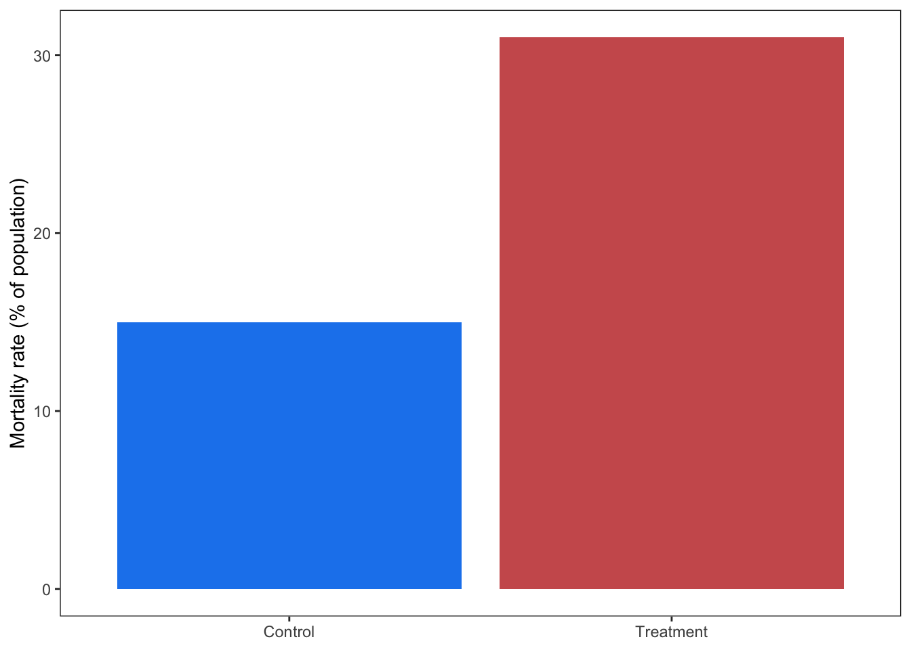
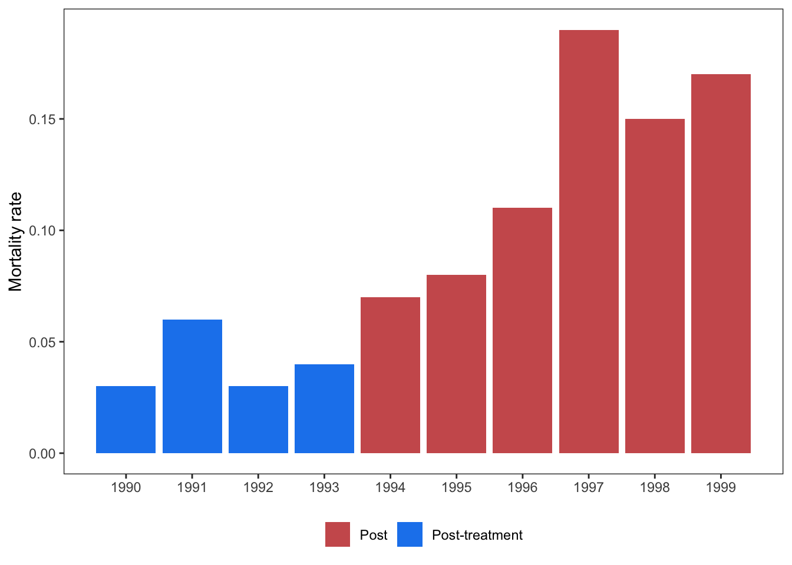
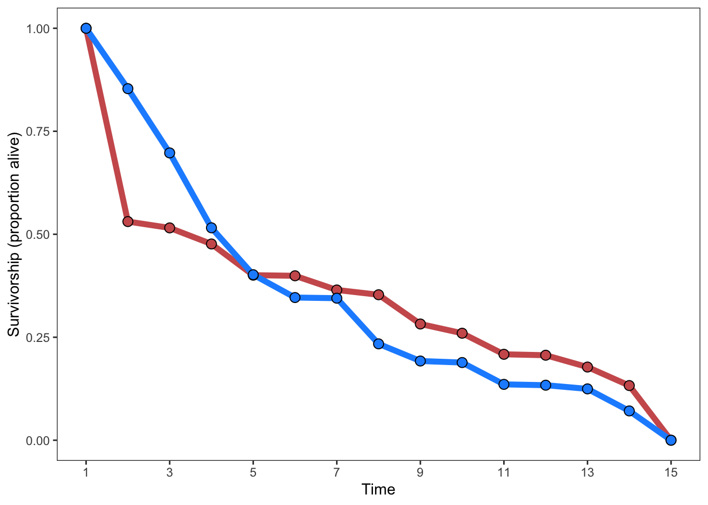

Discrete outcomes with discrete predictor
lnOR and lnRR
Preamble blah blah blah
Cheatsheet: XXXX
The easy cases
Proportion or % data with total population
These are also straightforward. Extract the percent and reconstruct the number of individuals in each outcome category based on total n.
No control group
Some experiments only report the experimental treatment, assuming that the control has a probability of 50%. In these cases, you’ll have to assume the same to calculate lnOR, e.g., by populating one of the columns with 50 / 50 values (generally with the same total N as the first row). For example, if a study only reports:
| Outcome A | Outcome B | |
|---|---|---|
| Treatment | 35 | 15 |
Take the row sum (\(35 + 15 = 50\)) and populate the missing values (\(0.5 * 50\)) for the control:
| Outcome A | Outcome B | |
|---|---|---|
| Treatment | 35 | 15 |
| Control | 25 | 25 |
Observations like this should be flagged for sensitivity analyses.
Now let’s look at some other ways this data is displayed.
Aggregating multiple measurements
Some studies may report a response like survivorship over multiple years before and after some intervention (e.g., eradication of a predator, change in management policy, etc). Since the years before and after this treatment aren’t pairable, the best approach is to summarize across years per treatment.
year treatment
<int> <char>
1: 1990 Pre
2: 1991 Pre
3: 1992 Pre
4: 1993 Pre
5: 1994 Post
6: 1995 Post
7: 1996 Post
8: 1997 Post
9: 1998 Post
10: 1999 Post
To extract data like this, you would need to determine the total population size for each year (which is hopefully reported) and multiply this by the proportion of that year to derive the number of individuals that lived and died per year to produce a table like this:
| year | treatment | total_individuals | number_deceased | mortality_rate |
|---|---|---|---|---|
| 1990 | Pre | 150 | 5 | 0.03 |
| 1991 | Pre | 131 | 8 | 0.06 |
| 1992 | Pre | 160 | 4 | 0.03 |
| 1993 | Pre | 171 | 7 | 0.04 |
| 1994 | Post | 153 | 11 | 0.07 |
| 1995 | Post | 158 | 13 | 0.08 |
| 1996 | Post | 111 | 12 | 0.11 |
| 1997 | Post | 95 | 18 | 0.19 |
| 1998 | Post | 98 | 15 | 0.15 |
| 1999 | Post | 101 | 17 | 0.17 |
Then, take the sum of total_individuals and number_deceased and calculate the number living:
| treatment | total_individuals | number_deceased | number_living |
|---|---|---|---|
| Post | 716 | 86 | 630 |
| Pre | 612 | 24 | 588 |
The columns number_deceased and number_living provide you the contingency table necessary to calculate lnOR.
However, what do you do if there is no sample size provided (e.g., total number of individuals)? In this case, your best bet is to calculate the mean ± SD of each year per treatment group and use this to calculate SMD. Since these values are proportions, be sure to arcsin transform these values (see (sec?)). The resulting effect size and sampling variance can then be converted to lnOR to be comparable to the rest of your dataset.
Survivorship curves
I don’t know how to directly simulate the underlying data for these…

In this case, the y axis is the proportion (\(p1\) and \(p2\)) for each group (group 1 and 2). The meta-analyst needs to extract the total number of individuals in groups 1 (blue) and 2 (red) at time point 1, which can then be multipled by the total number of individuals at the beginning of the experiment. This will yield \(a\) and \(c\) for the two groups. \(b\) and \(d\) can then be found by subtracting from the total \(n\):
| time | \(p\) | N | Alive | Dead | |
|---|---|---|---|---|---|
| Group 1 (blue) | 3 | \(p1\)=0.71 | \(n1\)=150 | \(a\)=107 | \(b\)=43 |
| Group 2 (red) | 3 | \(p2\)=0.46 | \(n2\)=150 | \(c\)=69 | \(d\)=81 |
As one can see, this type of data also poses a classic time-series challenge, which can face all effect sizes. We recommend extracting the data for each time point and then using random effects to control for temporal autocorrelation in your meta-analytic model (see sec-XXXX). An alternative is to extract the time point with the greatest difference between control and treatment and analyze that.
LC50?
Many laboratory studies, for example on the effects of a pollution agent on mortality, report LC50, which is the dosage at which 50% of the exposed individuals experience an outcome.
These figures look like this:
#' @Kyle?LC50 is already its own effect size. There is no known way to convert it to lnOR or lnRR. We’re as clueless as you :)
Are these directly comparable to regular lnOR/lnRR effect sizes?